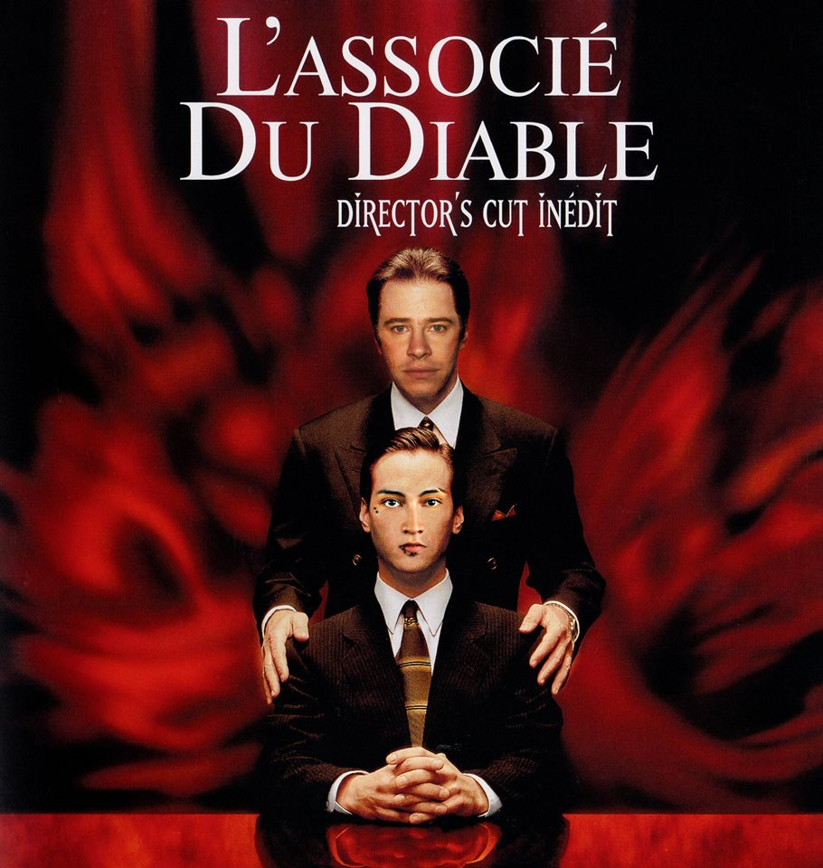

Bardot Alexandre

pâtissier en reconversion
Mon expériences professionnelles:
- 2017 manager dans un restaurant (paris 8)
- 2004-2011ouvrier patissier expérimenté (paris 2)
- 2002-2004 apprenti patissier chez la tradition
cursus universitaire :
- 2005-2007 ceproq paris 19 ( btm patissier )
- 2004-2005 ceproq paris 19 (CAP BEP)
- 2002-2004 CFA de beauvais
langues :
- anglais : intermédiaire
- japonnais: débutant